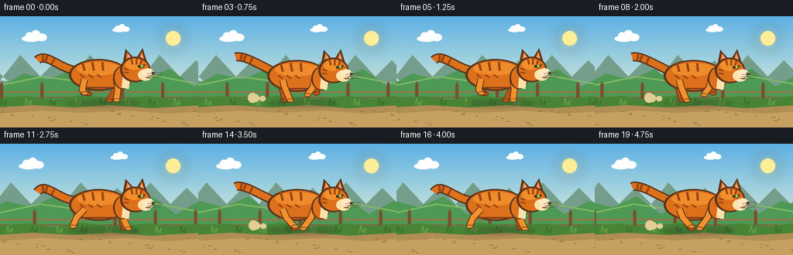
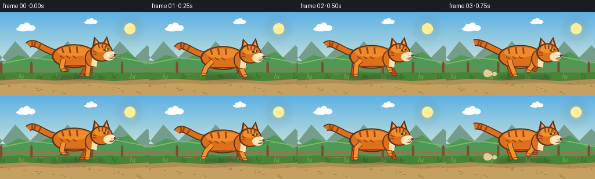

CODING AGENTS AS PIXEL WORLD MODELS
traex/GPT-5.6-Sol · instance_preservation_0003
点击播放 · 原生 RGB 像素
逐轮保存的候选
回放视频、检查图与代码变化。
每份候选均可单独播放。实际图片检查记录在下方工具轨迹中。
候选 01播放与检查图
点击播放 · 原生 RGB 像素

展开代码变化
--- 上一保存版本
+++ 本次保存版本
@@ -0,0 +1,223 @@
+from pathlib import Path
+import json, math
+import numpy as np
+from PIL import Image, ImageDraw, ImageFilter
+import artifact_io
+
+CASE_DIR = Path(__file__).resolve().parent
+spec = json.loads((CASE_DIR / 'task_spec.json').read_text())
+W, H, N = spec['width'], spec['height'], spec['frames']
+S = 4
+WS, HS = W*S, H*S
+
+def Q(v): return int(round(v*S))
+def box(b): return tuple(Q(x) for x in b)
+def pts(p): return [(Q(x), Q(y)) for x,y in p]
+
+def ellipse(d, b, fill, outline=None, width=1):
+ d.ellipse(box(b), fill=fill, outline=outline, width=Q(width) if outline else 1)
+def polygon(d, p, fill, outline=None):
+ d.polygon(pts(p), fill=fill, outline=outline)
+def line(d, p, fill, width, joint='curve'):
+ d.line(pts(p), fill=fill, width=Q(width), joint=joint)
+def rr(d,b,r,fill,outline=None,width=1):
+ d.rounded_rectangle(box(b), radius=Q(r), fill=fill, outline=outline, width=Q(width))
+
+def bezier(p0,p1,p2,p3,n=24):
+ out=[]
+ for j in range(n+1):
+ t=j/n; u=1-t
+ out.append((u**3*p0[0]+3*u*u*t*p1[0]+3*u*t*t*p2[0]+t**3*p3[0],
+ u**3*p0[1]+3*u*u*t*p1[1]+3*u*t*t*p2[1]+t**3*p3[1]))
+ return out
+
+def cloud(draw,x,y,scale=1,alpha=(255,255,255,180)):
+ ellipse(draw,(x,y,x+27*scale,y+9*scale),alpha)
+ ellipse(draw,(x+5*scale,y-5*scale,x+17*scale,y+8*scale),alpha)
+ ellipse(draw,(x+13*scale,y-8*scale,x+27*scale,y+8*scale),alpha)
+ ellipse(draw,(x+21*scale,y-3*scale,x+36*scale,y+8*scale),alpha)
+
+def leg(draw, anchor, phase, col, outline, near=True, fore=True, bob=0):
+ # a readable two-joint running leg: sinusoidal stride with lifted recovery paw
+ ax, ay = anchor
+ s = math.sin(phase); c = math.cos(phase)
+ stride = 16*s
+ lift = max(0.0, -c) * 10 + max(0.0, c)*1.2
+ if fore:
+ knee = (ax + 7*s + 2, ay + 12 + 2*c)
+ else:
+ knee = (ax + 8*s - 3, ay + 10 - 3*c)
+ foot = (ax + stride, 110 + bob - lift)
+ w = 7 if near else 6
+ line(draw,[anchor,knee,foot],outline,w+2)
+ line(draw,[anchor,knee,foot],col,w)
+ ellipse(draw,(foot[0]-4,foot[1]-2.4,foot[0]+5,foot[1]+2.5),outline)
+ ellipse(draw,(foot[0]-3.2,foot[1]-1.7,foot[0]+4.2,foot[1]+1.6),col)
+ return foot, lift
+
+def draw_cat(img, i):
+ d=ImageDraw.Draw(img,'RGBA')
+ phase=2*math.pi*(i/5.0)
+ bob=-1.8*math.cos(phase*2)
+ cx=130 + 1.2*math.sin(i*.47)
+ y=bob
+ orange=(221,112,27,255); light=(242,145,45,255); dark=(155,70,20,255)
+ outline=(91,52,28,255); far=(190,82,22,255); cream=(255,225,174,255)
+
+ # elastic oval shadow and tiny contact dust
+ sh=Image.new('RGBA',(WS,HS),(0,0,0,0)); sd=ImageDraw.Draw(sh,'RGBA')
+ air=max(0, -math.cos(phase))*2
+ ellipse(sd,(88,108,180,117),(45,57,37,72-int(air*7)))
+ sh=sh.filter(ImageFilter.GaussianBlur(Q(2.2))); img.alpha_composite(sh)
+ d=ImageDraw.Draw(img,'RGBA')
+
+ # Dust puffs trail behind only around push-off, tied to cat and ground
+ if math.sin(phase) < -0.55:
+ for k in range(3):
+ dx=76-k*7+((i*11+k*17)%5)
+ ellipse(d,(dx,103-k*2,dx+8+k*2,110+k),(226,206,149,80-k*16))
+
+ # Tail behind torso, a thick expressive S curve, continuous identity marker
+ wave=5*math.sin(phase+.5)
+ tail=bezier((97,y+72),(76,y+66+wave),(58,y+49-wave*.4),(48,y+57+wave*.8),28)
+ line(d,tail,outline,12)
+ line(d,tail,orange,8.5)
+ # tail tabby rings
+ for t in (.53,.68,.82):
+ idx=int(t*(len(tail)-1)); a=tail[max(0,idx-1)]; b=tail[min(len(tail)-1,idx+1)]
+ vx=b[0]-a[0]; vy=b[1]-a[1]; L=max(.1,math.hypot(vx,vy)); nx=-vy/L; ny=vx/L
+ p=(tail[idx][0],tail[idx][1])
+ line(d,[(p[0]-nx*4,p[1]-ny*4),(p[0]+nx*4,p[1]+ny*4)],dark,3)
+
+ # far pair of legs, deliberately darker for depth
+ leg(d,(108,y+83),phase+math.pi*.88,far,outline,False,False,bob*.15)
+ leg(d,(151,y+82),phase+math.pi*1.78,far,outline,False,True,bob*.15)
+
+ # Body outline + body, slightly lengthened racing silhouette
+ ellipse(d,(89,y+57,166,y+98),outline)
+ ellipse(d,(92,y+59,164,y+96),orange)
+ # warm back highlight and belly underside
+ ellipse(d,(99,y+61,155,y+78),(239,139,42,120))
+ line(d,[(103,y+94),(151,y+94)],(126,62,25,120),2)
+
+ # back stripes stay locked to this exact cat
+ for x0,tilt in [(106,3),(119,2),(132,1)]:
+ line(d,[(x0,y+61),(x0+tilt,y+72)],dark,3)
+ # flank tabby marks
+ for off in range(3):
+ x0=103+off*11
+ line(d,[(x0,y+77),(x0+6,y+81)],(153,67,20,220),2.3)
+
+ # nearest legs over the torso edge
+ leg(d,(109,y+83),phase+math.pi,light,outline,True,False,bob*.15)
+ leg(d,(150,y+82),phase,light,outline,True,True,bob*.15)
+
+ # shoulder / chest bridge
+ ellipse(d,(146,y+66,170,y+96),outline)
+ ellipse(d,(148,y+67,169,y+95),orange)
+ polygon(d,[(159,y+74),(169,y+78),(166,y+96),(157,y+94)],cream)
+
+ # head in clear right-facing profile
+ hx,hy=174,y+65
+ # ears first, strongly outlined
+ polygon(d,[(159,y+60),(162,y+44),(174,y+57)],outline)
+ polygon(d,[(176,y+56),(184,y+43),(190,y+62)],outline)
+ polygon(d,[(162,y+58),(164,y+48),(171,y+57)],orange)
+ polygon(d,[(179,y+57),(183,y+47),(187,y+60)],orange)
+ polygon(d,[(164.3,y+55),(165,y+50),(169,y+56)],(244,166,139,255))
+ polygon(d,[(181,y+56),(183,y+50),(186,y+59)],(244,166,139,255))
+ ellipse(d,(155,y+54,194,y+87),outline)
+ ellipse(d,(158,y+56,192,y+85),orange)
+ # forehead lighter plane and stable stripes
+ ellipse(d,(162,y+57,184,y+71),(241,143,42,120))
+ line(d,[(169,y+56),(171,y+64)],dark,2.5)
+ line(d,[(176,y+56),(176,y+64)],dark,2.5)
+ line(d,[(183,y+57),(181,y+64)],dark,2.5)
+ # white muzzle, cheek and nose
+ ellipse(d,(178,y+70,197,y+85),cream)
+ ellipse(d,(184,y+69,198,y+79),(255,233,192,255))
+ polygon(d,[(196,y+73),(201,y+75),(196,y+78)],(96,49,42,255))
+ # almond eye + glint
+ polygon(d,[(178,y+65),(188,y+64),(184,y+69),(178,y+68)],(68,46,23,255))
+ ellipse(d,(181.2,y+64.6,184.8,y+68.4),(126,177,55,255))
+ ellipse(d,(183,y+65,184.2,y+66.5),(255,255,228,255))
+ # smile / mouth line and whiskers
+ line(d,[(196,y+78),(193,y+81),(188,y+81)],(103,56,40,255),1)
+ for dy,ex in [(-1,9),(2,10),(5,8)]:
+ line(d,[(190,y+77+dy),(200+ex,y+75+dy)],(92,76,59,180),.65)
+
+ # Forehead/cheek stripes and collar-like neck fold detail (not an accessory)
+ line(d,[(160,y+69),(166,y+71)],dark,2)
+ line(d,[(160,y+74),(166,y+75)],dark,2)
+
+
+def make_frame(i):
+ # luminous painted sky gradient
+ yy=np.arange(HS)[:,None]
+ top=np.array([93,177,229.]); bot=np.array([229,241,215.])
+ t=np.minimum(yy/(HS*.80),1.0)[...,None]
+ arr=np.tile((top*(1-t)+bot*t),(1,WS,1)).astype(np.uint8)
+ img=Image.fromarray(arr,'RGB').convert('RGBA')
+ d=ImageDraw.Draw(img,'RGBA')
+ # Sun and halo
+ halo=Image.new('RGBA',(WS,HS),(0,0,0,0)); hd=ImageDraw.Draw(halo,'RGBA')
+ ellipse(hd,(207,13,239,45),(255,228,118,55)); halo=halo.filter(ImageFilter.GaussianBlur(Q(7)))
+ img.alpha_composite(halo); d=ImageDraw.Draw(img,'RGBA')
+ ellipse(d,(214,19,233,38),(255,237,151,225))
+
+ # Clouds move very gently, underscoring camera tracking
+ cloud(d,28-i*.35,25,.9,(255,255,255,145))
+ cloud(d,145-i*.22,15,.62,(255,255,255,125))
+
+ # distant mountain layers, subtle parallax looping motifs
+ faroff=(i*1.1)%90
+ ridges=[]
+ for k in range(-2,5):
+ x=k*90-faroff
+ ridges += [(x,83),(x+26,50),(x+52,78),(x+73,57),(x+100,84)]
+ # draw as one skyline but preserve monotonic-ish sequence
+ polygon(d,[(-20,86)]+ridges+[(340,95),(-20,95)],(116,158,139,130))
+ # rolling hills
+ off=(i*2.1)%125
+ hills=[]
+ for k in range(-2,5):
+ x=k*125-off
+ hills.extend([(x,91),(x+31,74),(x+63,82),(x+94,68),(x+125,91)])
+ polygon(d,[(-30,92)]+hills+[(360,115),(-30,115)],(78,153,85,255))
+ # pale hill highlights
+ line(d,[(-10,91),(55-off*.12,78),(121-off*.12,87),(190-off*.12,75),(270,90)],(130,185,100,120),2)
+
+ # midground fence moves left consistently
+ foff=(i*5.6)%52
+ line(d,[(-10,98),(266,98)],(151,117,71,180),2)
+ line(d,[(-10,105),(266,105)],(130,95,59,160),1.5)
+ for k in range(-1,7):
+ x=k*52-foff
+ rr(d,(x,88,x+4,110),1,(118,82,48,230))
+ polygon(d,[(x,88),(x+2,84),(x+4,88)],(118,82,48,230))
+
+ # foreground turf and subtle horizontal motion streaks
+ polygon(d,[(-5,106),(35,103),(68,108),(106,102),(148,107),(190,103),(225,107),(261,102),(261,145),(-5,145)],(73,132,54,255))
+ # layered grass patches shift quickly
+ goff=(i*8.0)%32
+ for k in range(-2,12):
+ x=k*32-goff
+ col=(104,160,68,210) if k%2 else (57,112,45,220)
+ line(d,[(x,115),(x+2,106),(x+4,115),(x+8,109),(x+7,116)],col,1.2)
+ # dirt running trail
+ polygon(d,[(-5,118),(42,115),(94,118),(143,115),(195,119),(261,115),(261,145),(-5,145)],(177,142,83,255))
+ polygon(d,[(-5,126),(55,122),(104,125),(164,122),(216,126),(261,123),(261,145),(-5,145)],(197,160,96,255))
+ # pebbles and speed dashes deterministic
+ rng=np.random.default_rng(440+i)
+ for j in range(24):
+ x=(j*47 - i*13.5 + (j*j)%17)%275-8
+ y=122+(j*7)%20
+ length=2+(j%4)
+ line(d,[(x,y),(x+length,y)],(132,103,63,100),.65)
+ # Cat on top
+ draw_cat(img,i)
+ return np.asarray(img.convert('RGB').resize((W,H),Image.Resampling.LANCZOS),dtype=np.uint8)
+
+frames=np.stack([make_frame(i) for i in range(N)],axis=0)
+artifact_io.save(frames, CASE_DIR)
+print(f'saved {frames.shape} {frames.dtype}')
可观测工具轨迹
实际执行的命令与返回图片。
命令 1exit 0
/bin/bash -lc "cat prompt.txt && printf '\\n---RULES---\\n' && cat GENERATION_RULES.md && printf '\\n---SPEC---\\n' && cat task_spec.json"
命令 2exit 0
/bin/bash -lc "find . -maxdepth 2 -type f -printf '%p\\n' | sort"
命令 3exit 0
/bin/bash -lc 'cat artifact_io.py'
命令 4exit 0
/bin/bash -lc "cat > generate.py <<'PY'
from pathlib import Path
import json, math
import numpy as np
from PIL import Image, ImageDraw, ImageFilter
import artifact_io
CASE_DIR = Path(__file__).resolve().parent
spec = json.loads((CASE_DIR / 'task_spec.json').read_text())
W, H, N = spec['width'], spec['height'], spec['frames']
S = 4
WS, HS = W*S, H*S
def Q(v): return int(round(v*S))
def box(b): return tuple(Q(x) for x in b)
def pts(p): return [(Q(x), Q(y)) for x,y in p]
def ellipse(d, b, fill, outline=None, width=1):
d.ellipse(box(b), fill=fill, outline=outline, width=Q(width) if outline else 1)
def polygon(d, p, fill, outline=None):
d.polygon(pts(p), fill=fill, outline=outline)
def line(d, p, fill, width, joint='curve'):
d.line(pts(p), fill=fill, width=Q(width), joint=joint)
def rr(d,b,r,fill,outline=None,width=1):
d.rounded_rectangle(box(b), radius=Q(r), fill=fill, outline=outline, width=Q(width))
def bezier(p0,p1,p2,p3,n=24):
out=[]
for j in range(n+1):
t=j/n; u=1-t
out.append((u**3*p0[0]+3*u*u*t*p1[0]+3*u*t*t*p2[0]+t**3*p3[0],
u**3*p0[1]+3*u*u*t*p1[1]+3*u*t*t*p2[1]+t**3*p3[1]))
return out
def cloud(draw,x,y,scale=1,alpha=(255,255,255,180)):
ellipse(draw,(x,y,x+27*scale,y+9*scale),alpha)
ellipse(draw,(x+5*scale,y-5*scale,x+17*scale,y+8*scale),alpha)
ellipse(draw,(x+13*scale,y-8*scale,x+27*scale,y+8*scale),alpha)
ellipse(draw,(x+21*scale,y-3*scale,x+36*scale,y+8*scale),alpha)
def leg(draw, anchor, phase, col, outline, near=True, fore=True, bob=0):
# a readable two-joint running leg: sinusoidal stride with lifted recovery paw
ax, ay = anchor
s = math.sin(phase); c = math.cos(phase)
stride = 16*s
lift = max(0.0, -c) * 10 + max(0.0, c)*1.2
if fore:
knee = (ax + 7*s + 2, ay + 12 + 2*c)
else:
knee = (ax + 8*s - 3, ay + 10 - 3*c)
foot = (ax + stride, 110 + bob - lift)
w = 7 if near else 6
line(draw,[anchor,knee,foot],outline,w+2)
line(draw,[anchor,knee,foot],col,w)
ellipse(draw,(foot[0]-4,foot[1]-2.4,foot[0]+5,foot[1]+2.5),outline)
ellipse(draw,(foot[0]-3.2,foot[1]-1.7,foot[0]+4.2,foot[1]+1.6),col)
return foot, lift
def draw_cat(img, i):
d=ImageDraw.Draw(img,'RGBA')
phase=2*math.pi*(i/5.0)
bob=-1.8*math.cos(phase*2)
cx=130 + 1.2*math.sin(i*.47)
y=bob
orange=(221,112,27,255); light=(242,145,45,255); dark=(155,70,20,255)
outline=(91,52,28,255); far=(190,82,22,255); cream=(255,225,174,255)
# elastic oval shadow and tiny contact dust
sh=Image.new('RGBA',(WS,HS),(0,0,0,0)); sd=ImageDraw.Draw(sh,'RGBA')
air=max(0, -math.cos(phase))*2
ellipse(sd,(88,108,180,117),(45,57,37,72-int(air*7)))
sh=sh.filter(ImageFilter.GaussianBlur(Q(2.2))); img.alpha_composite(sh)
d=ImageDraw.Draw(img,'RGBA')
# Dust puffs trail behind only around push-off, tied to cat and ground
if math.sin(phase) < -0.55:
for k in range(3):
dx=76-k*7+((i*11+k*17)%5)
ellipse(d,(dx,103-k*2,dx+8+k*2,110+k),(226,206,149,80-k*16))
# Tail behind torso, a thick expressive S curve, continuous identity marker
wave=5*math.sin(phase+.5)
tail=bezier((97,y+72),(76,y+66+wave),(58,y+49-wave*.4),(48,y+57+wave*.8),28)
line(d,tail,outline,12)
line(d,tail,orange,8.5)
# tail tabby rings
for t in (.53,.68,.82):
idx=int(t*(len(tail)-1)); a=tail[max(0,idx-1)]; b=tail[min(len(tail)-1,idx+1)]
vx=b[0]-a[0]; vy=b[1]-a[1]; L=max(.1,math.hypot(vx,vy)); nx=-vy/L; ny=vx/L
p=(tail[idx][0],tail[idx][1])
line(d,[(p[0]-nx*4,p[1]-ny*4),(p[0]+nx*4,p[1]+ny*4)],dark,3)
# far pair of legs, deliberately darker for depth
leg(d,(108,y+83),phase+math.pi*.88,far,outline,False,False,bob*.15)
leg(d,(151,y+82),phase+math.pi*1.78,far,outline,False,True,bob*.15)
# Body outline + body, slightly lengthened racing silhouette
ellipse(d,(89,y+57,166,y+98),outline)
ellipse(d,(92,y+59,164,y+96),orange)
# warm back highlight and belly underside
ellipse(d,(99,y+61,155,y+78),(239,139,42,120))
line(d,[(103,y+94),(151,y+94)],(126,62,25,120),2)
# back stripes stay locked to this exact cat
for x0,tilt in [(106,3),(119,2),(132,1)]:
line(d,[(x0,y+61),(x0+tilt,y+72)],dark,3)
# flank tabby marks
for off in range(3):
x0=103+off*11
line(d,[(x0,y+77),(x0+6,y+81)],(153,67,20,220),2.3)
# nearest legs over the torso edge
leg(d,(109,y+83),phase+math.pi,light,outline,True,False,bob*.15)
leg(d,(150,y+82),phase,light,outline,True,True,bob*.15)
# shoulder / chest bridge
ellipse(d,(146,y+66,170,y+96),outline)
ellipse(d,(148,y+67,169,y+95),orange)
polygon(d,[(159,y+74),(169,y+78),(166,y+96),(157,y+94)],cream)
# head in clear right-facing profile
hx,hy=174,y+65
# ears first, strongly outlined
polygon(d,[(159,y+60),(162,y+44),(174,y+57)],outline)
polygon(d,[(176,y+56),(184,y+43),(190,y+62)],outline)
polygon(d,[(162,y+58),(164,y+48),(171,y+57)],orange)
polygon(d,[(179,y+57),(183,y+47),(187,y+60)],orange)
polygon(d,[(164.3,y+55),(165,y+50),(169,y+56)],(244,166,139,255))
polygon(d,[(181,y+56),(183,y+50),(186,y+59)],(244,166,139,255))
ellipse(d,(155,y+54,194,y+87),outline)
ellipse(d,(158,y+56,192,y+85),orange)
# forehead lighter plane and stable stripes
ellipse(d,(162,y+57,184,y+71),(241,143,42,120))
line(d,[(169,y+56),(171,y+64)],dark,2.5)
line(d,[(176,y+56),(176,y+64)],dark,2.5)
line(d,[(183,y+57),(181,y+64)],dark,2.5)
# white muzzle, cheek and nose
ellipse(d,(178,y+70,197,y+85),cream)
ellipse(d,(184,y+69,198,y+79),(255,233,192,255))
polygon(d,[(196,y+73),(201,y+75),(196,y+78)],(96,49,42,255))
# almond eye + glint
polygon(d,[(178,y+65),(188,y+64),(184,y+69),(178,y+68)],(68,46,23,255))
ellipse(d,(181.2,y+64.6,184.8,y+68.4),(126,177,55,255))
ellipse(d,(183,y+65,184.2,y+66.5),(255,255,228,255))
# smile / mouth line and whiskers
line(d,[(196,y+78),(193,y+81),(188,y+81)],(103,56,40,255),1)
for dy,ex in [(-1,9),(2,10),(5,8)]:
line(d,[(190,y+77+dy),(200+ex,y+75+dy)],(92,76,59,180),.65)
# Forehead/cheek stripes and collar-like neck fold detail (not an accessory)
line(d,[(160,y+69),(166,y+71)],dark,2)
line(d,[(160,y+74),(166,y+75)],dark,2)
def make_frame(i):
# luminous painted sky gradient
yy=np.arange(HS)[:,None]
top=np.array([93,177,229.]); bot=np.array([229,241,215.])
t=np.minimum(yy/(HS*.80),1.0)[...,None]
arr=np.tile((top*(1-t)+bot*t),(1,WS,1)).astype(np.uint8)
img=Image.fromarray(arr,'RGB').convert('RGBA')
d=ImageDraw.Draw(img,'RGBA')
# Sun and halo
halo=Image.new('RGBA',(WS,HS),(0,0,0,0)); hd=ImageDraw.Draw(halo,'RGBA')
ellipse(hd,(207,13,239,45),(255,228,118,55)); halo=halo.filter(ImageFilter.GaussianBlur(Q(7)))
img.alpha_composite(halo); d=ImageDraw.Draw(img,'RGBA')
ellipse(d,(214,19,233,38),(255,237,151,225))
# Clouds move very gently, underscoring camera tracking
cloud(d,28-i*.35,25,.9,(255,255,255,145))
cloud(d,145-i*.22,15,.62,(255,255,255,125))
# distant mountain layers, subtle parallax looping motifs
faroff=(i*1.1)%90
ridges=[]
for k in range(-2,5):
x=k*90-faroff
ridges += [(x,83),(x+26,50),(x+52,78),(x+73,57),(x+100,84)]
# draw as one skyline but preserve monotonic-ish sequence
polygon(d,[(-20,86)]+ridges+[(340,95),(-20,95)],(116,158,139,130))
# rolling hills
off=(i*2.1)%125
hills=[]
for k in range(-2,5):
x=k*125-off
hills.extend([(x,91),(x+31,74),(x+63,82),(x+94,68),(x+125,91)])
polygon(d,[(-30,92)]+hills+[(360,115),(-30,115)],(78,153,85,255))
# pale hill highlights
line(d,[(-10,91),(55-off*.12,78),(121-off*.12,87),(190-off*.12,75),(270,90)],(130,185,100,120),2)
# midground fence moves left consistently
foff=(i*5.6)%52
line(d,[(-10,98),(266,98)],(151,117,71,180),2)
line(d,[(-10,105),(266,105)],(130,95,59,160),1.5)
for k in range(-1,7):
x=k*52-foff
rr(d,(x,88,x+4,110),1,(118,82,48,230))
polygon(d,[(x,88),(x+2,84),(x+4,88)],(118,82,48,230))
# foreground turf and subtle horizontal motion streaks
polygon(d,[(-5,106),(35,103),(68,108),(106,102),(148,107),(190,103),(225,107),(261,102),(261,145),(-5,145)],(73,132,54,255))
# layered grass patches shift quickly
goff=(i*8.0)%32
for k in range(-2,12):
x=k*32-goff
col=(104,160,68,210) if k%2 else (57,112,45,220)
line(d,[(x,115),(x+2,106),(x+4,115),(x+8,109),(x+7,116)],col,1.2)
# dirt running trail
polygon(d,[(-5,118),(42,115),(94,118),(143,115),(195,119),(261,115),(261,145),(-5,145)],(177,142,83,255))
polygon(d,[(-5,126),(55,122),(104,125),(164,122),(216,126),(261,123),(261,145),(-5,145)],(197,160,96,255))
# pebbles and speed dashes deterministic
rng=np.random.default_rng(440+i)
for j in range(24):
x=(j*47 - i*13.5 + (j*j)%17)%275-8
y=122+(j*7)%20
length=2+(j%4)
line(d,[(x,y),(x+length,y)],(132,103,63,100),.65)
# Cat on top
draw_cat(img,i)
return np.asarray(img.convert('RGB').resize((W,H),Image.Resampling.LANCZOS),dtype=np.uint8)
frames=np.stack([make_frame(i) for i in range(N)],axis=0)
artifact_io.save(frames, CASE_DIR)
print(f'saved {frames.shape} {frames.dtype}')
PY
python generate.py"命令 5exit 0
/bin/bash -lc "python - <<'PY'
import numpy as np
from PIL import Image
from pathlib import Path
p=Path('.')
z=np.load('pixels.npz')['pixels']
print(z.shape,z.dtype,'unique frames',len({z[:,:,i].tobytes() for i in range(z.shape[2])}))
for f in ['pixels.npz','index.html','inspection.png','transition_check.png','generate.py']:
q=p/f; print(f,q.stat().st_size)
PY"视觉工具实际返回图片 1

视觉工具实际返回图片 2

保存候选 1 份；完成命令 5 次；可验证图片返回 2 张。原始 API 响应与完整日志保留在本地。